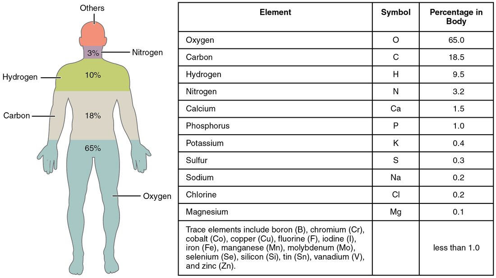
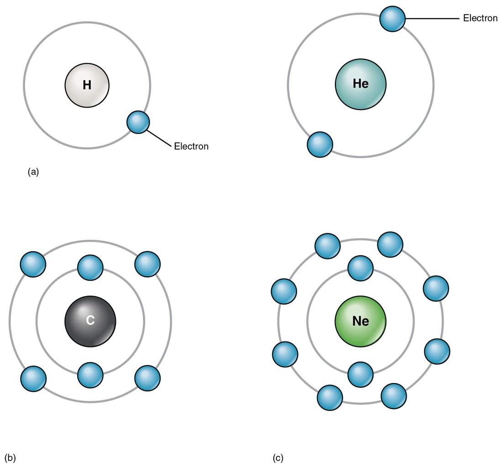
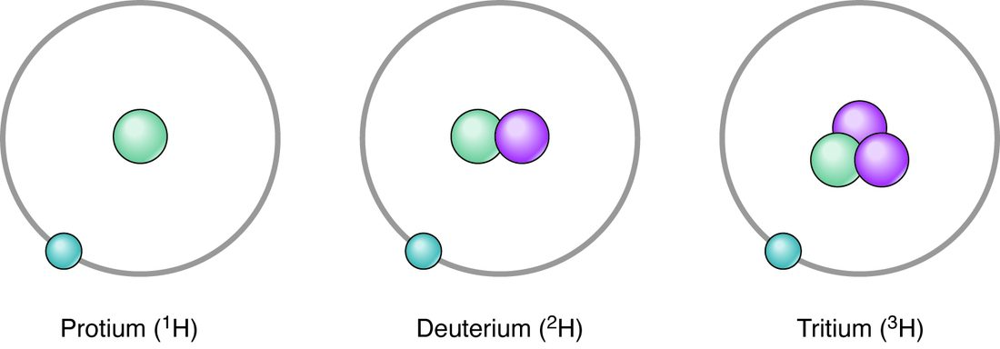
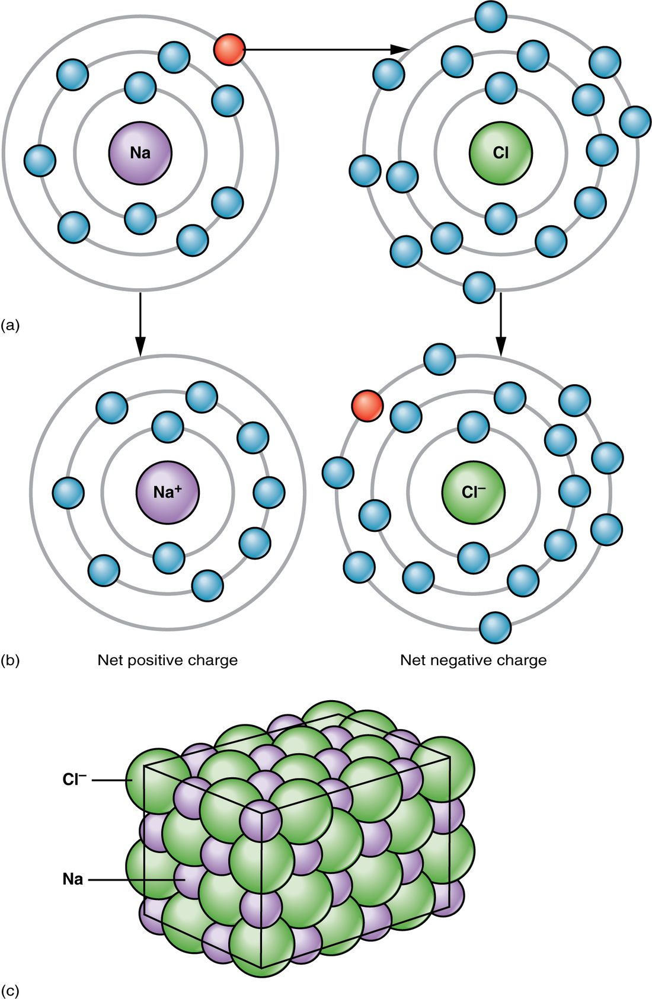
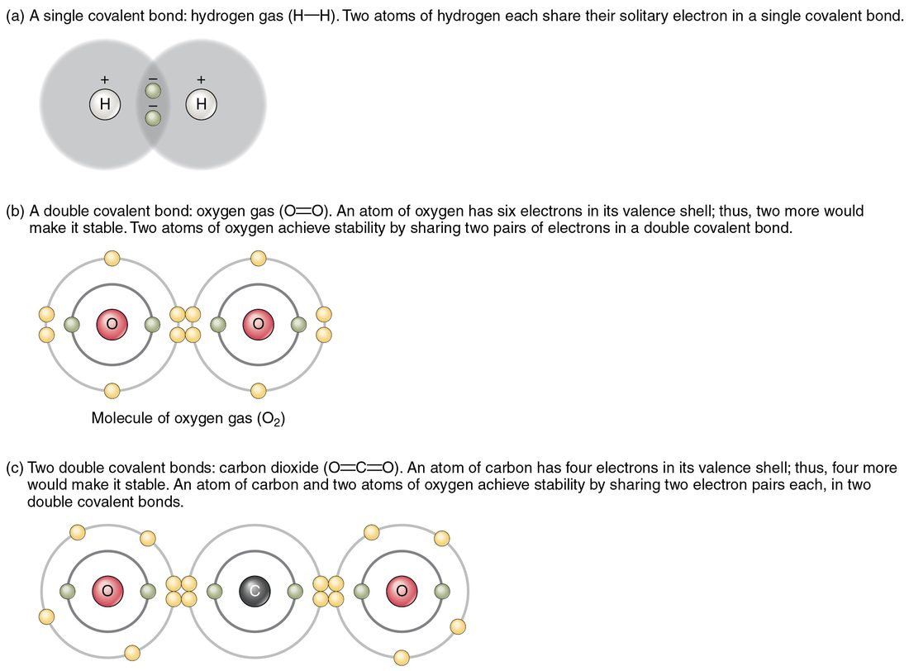
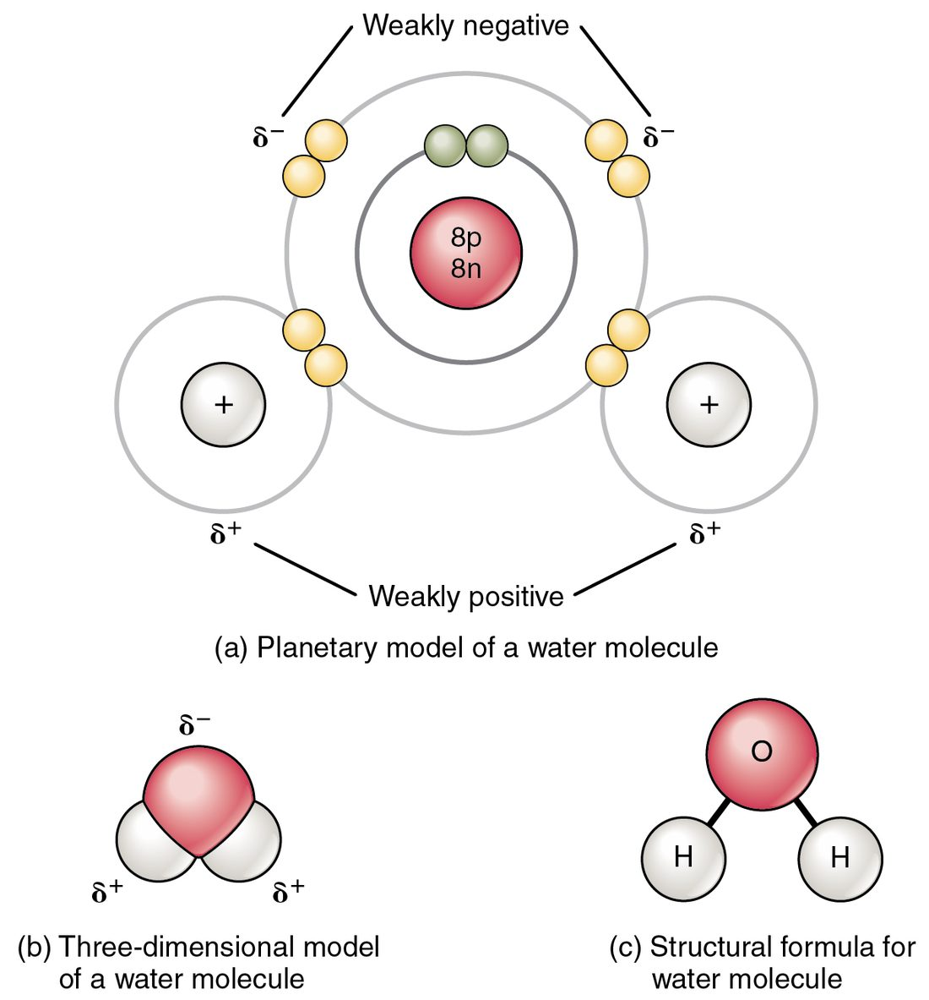
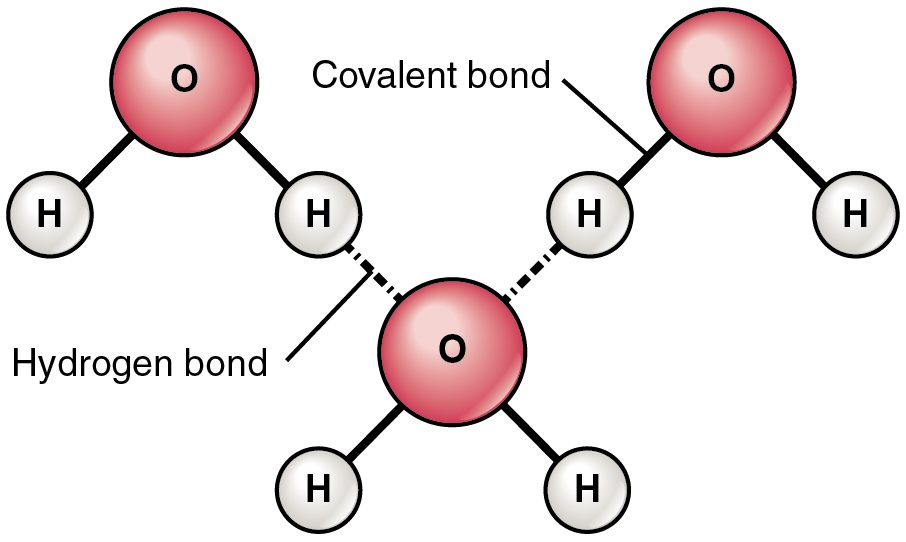

A blood test that reports your sodium, potassium and chloride is reporting on atoms that carry an electric charge. This page covers the atoms, ions and bonds you need for anatomy and physiology: what an atom is made of, why some atoms gain or lose electrons and become ions, and the three kinds of attraction that hold the chemistry of your body together. Every later topic that mentions a charge, a bond or an electrolyte builds on what is here.
Matter, elements and compounds
Start with something you can hold: a glass of water. It has mass and it takes up space, so it is matter. Everything in your body is matter, from bone to the air in your lungs.
Split water far enough and you reach two kinds of atom, hydrogen and oxygen. A substance made of only one kind of atom is a chemical element. Oxygen is an element. So are carbon, sodium and iron. Chemists have identified 118 elements and arrange them in the periodic table, a chart that orders the elements by the number of protons in their atoms (you will meet protons in the next section).
Your body uses only about two dozen elements. Four of them, oxygen, carbon, hydrogen and nitrogen, make up about 96% of your body mass (Figure 1). Calcium and phosphorus, mostly in bone, add about another 2.5%. The rest are present in tiny amounts but are still essential. Iron, for example, is less than one hundredth of one percent of your mass, yet you cannot carry oxygen in your blood without it.

When atoms of two or more different elements join in a fixed ratio, they form a compound (com- = together, ponere = to put). Water (H2O) is a compound: always two hydrogen atoms for every oxygen atom. A compound behaves nothing like the elements in it. Sodium is a metal that reacts violently with water, and chlorine is a poisonous gas, but sodium chloride is the harmless white crystal you shake on food.
You met the word molecule in the levels of organization: two or more atoms joined together. The two words overlap but are not the same. Oxygen gas (O2) is a molecule but not a compound, because both atoms are oxygen. Water is both. Sodium chloride is a compound but not a molecule, because it is built from charged particles packed in a crystal rather than from separate units. That difference will make sense once you reach ionic bonds below.
Inside an atom: protons, neutrons and electrons
An atom (a- = not, tomos = cut: "uncuttable") is the smallest unit of an element that still behaves like that element. It has two regions.
- The nucleus sits at the center. It holds protons, which carry a positive charge, and neutrons, which carry no charge. Protons and neutrons have almost the same mass, and together they supply nearly all of an atom's mass.
- Electrons move around the nucleus. Each carries a negative charge exactly equal in size to a proton's positive charge, but an electron has only about 1/1,800 of a proton's mass.
A neutral atom has equal numbers of protons and electrons, so the charges cancel. Hold on to that rule. Everything about ions follows from it.
Electrons are not scattered at random. They occupy electron shells, levels at increasing distances from the nucleus (Figure 2). The first shell holds up to 2 electrons. For the small atoms that make up most of your body, the second and third shells are most stable holding 8. The outermost shell that holds any electrons is the valence shell (valentia = strength, capacity). Its electrons are the ones that take part in bonds.

An atom whose valence shell is full, like helium or neon, rarely reacts. An atom whose valence shell is partly filled gains, loses or shares electrons until it reaches a full valence shell, because that arrangement is lower in energy and so more stable. That single tendency drives every bond on this page.
Atomic number, mass number and isotopes
Every carbon atom has 6 protons. Every oxygen atom has 8. The number of protons defines the element, and it is called the atomic number. Change the number of protons and you have a different element.
The mass number is protons plus neutrons. Most carbon atoms have 6 protons and 6 neutrons, so their mass number is 12, written carbon-12. Electrons are left out of the count because their mass is so small.
Atoms of the same element can hold different numbers of neutrons. These versions are isotopes (iso- = equal, topos = place: they sit in the same place on the periodic table). Hydrogen has three (Figure 3). All three have one proton, so all three are hydrogen and bond in the same way. They differ only in mass.

Some isotopes have an unstable nucleus that breaks down and gives off radiation. These are radioisotopes, also called radioactive isotopes. Medicine uses them because a detector can find the radiation from outside your body. In a bone scan, a small dose of a technetium radioisotope is injected, collects in areas of active bone repair, and a camera maps where it went. A PET scan works the same way with a fluorine radioisotope attached to a tracer molecule that busy cells take up. Higher doses of radiation damage cells, which is how radiation therapy destroys cancer cells.
Electric charge
Rub a balloon on a wool sweater and it clings to the wall. That is electric charge at work: a property of particles that makes them push or pull on each other. There are two kinds, positive and negative.
- Opposite charges attract. A positive charge and a negative charge pull toward each other.
- Like charges repel. Two positive charges push apart, and so do two negative charges.
- The force gets stronger as the charges get closer.
Protons carry positive charge and electrons carry negative charge. The attraction between them holds electrons around the nucleus. The same rules decide which atoms bond, how water behaves and, much later in the course, how your nervous system and heart send signals.
Ions: atoms that gain or lose electrons
A sodium atom has 11 protons and 11 electrons. Its valence shell holds a single electron. When sodium meets an atom that pulls electrons strongly, it gives up that one electron. Now it has 11 protons but only 10 electrons, so it carries a net charge of +1. It has become a sodium ion, written Na+.
An ion (ion = going, from the Greek for "to go") is an atom or group of atoms with an unequal number of protons and electrons, so it carries a net charge. Only electrons move. The protons never change, which is why a sodium ion is still sodium.
- A cation (KAT-eye-on) has lost electrons and is positive: Na+, K+ (potassium), Ca2+ (calcium, which lost two), Mg2+ (magnesium).
- An anion (AN-eye-on) has gained electrons and is negative. Chlorine has 7 electrons in its valence shell and gains one to become the chloride ion, Cl−. Groups of atoms can be anions too, like the phosphate ion.
One ion deserves its own name. A hydrogen atom is one proton and one electron. If it loses that electron, what remains is a lone proton carrying a +1 charge: the hydrogen ion, H+. How many hydrogen ions a fluid holds turns out to matter enormously, and a later topic in this chapter is built around it.
Worked example: working out an ion's charge. A calcium atom has atomic number 20. Its ion in your blood has 18 electrons. What is its charge?
- Atomic number 20 means 20 protons: +20.
- 18 electrons: −18.
- Net charge: +20 − 18 = +2. The ion is Ca2+, a cation.
Electrolytes
A lab report for a patient who has been vomiting for two days often lists "electrolytes": sodium, potassium, chloride, calcium and magnesium. These are ions dissolved in your body water.
An electrolyte (electro- = electricity, lytos = able to be loosened) is a substance that separates into ions when it dissolves in water, so the water can conduct electricity. Sodium chloride is an electrolyte: in water it separates into Na+ and Cl−. Oxygen gas is not: it dissolves as whole, uncharged O2 molecules. In clinical use, "electrolytes" usually means the dissolved ions themselves.
Electrolytes matter because charged particles do work that neutral ones cannot. Differences in ion levels across the boundaries of your cells underlie every signal your nervous system sends and every heartbeat, and ions such as calcium trigger muscle to contract. That is why a potassium level outside its normal range can disturb the rhythm of the heart. The details come in later topics; the root cause is always charge.
Ionic bonds
Put sodium and chlorine together and sodium's lone valence electron moves to chlorine (Figure 4). Sodium becomes Na+ and chlorine becomes Cl−, each now with a full valence shell. The two opposite charges attract. That attraction is an ionic bond: the electrical attraction between a cation and an anion.

No electrons are shared in an ionic bond. Each ion simply attracts every oppositely charged ion around it, so sodium chloride forms a repeating crystal of alternating Na+ and Cl−, not separate two-atom units. In a dry crystal, ionic bonds are strong: sodium chloride melts only at about 800 °C. In water they are weak. Water pulls the ions apart, which is how the electrolytes in your blood come to be separate, free ions. The next topic shows exactly how.
In your body, ionic bonds matter most in the solid mineral of bone and teeth, where calcium ions bond with phosphate ions, and in the brief pairing of oppositely charged groups within large molecules.
Covalent bonds
Two hydrogen atoms each have one electron and a shell that holds two. Neither can take the other's electron, so they share: the two electrons pair up and move around both nuclei. That shared pair is a covalent bond (co- = together, valentia = strength).
Atoms can share more than one pair (Figure 5):
- A single bond shares one pair. H2 and the two O–H bonds in water are single bonds.
- A double bond shares two pairs. The two oxygen atoms in O2 share a double bond, and so does each oxygen in carbon dioxide (CO2) with its carbon.
- A triple bond shares three pairs, as in the nitrogen gas (N2) that makes up most of the air you breathe.

Covalent bonds are the strongest bonds in the molecules of your body. They hold together the atoms of water, of carbon dioxide and of every large molecule your cells build. Water does not pull them apart. Breaking one takes a chemical reaction, which you will meet later on this page.
Carbon has four electrons in its valence shell, so it forms four covalent bonds. That lets carbon atoms link into long chains, branches and rings: the frame of nearly every large molecule in your body.
Polarity: unequal sharing
Sharing is not always equal. Some atoms pull harder on shared electrons than others. Chemists call that pull electronegativity. Oxygen and nitrogen pull strongly. Carbon and hydrogen pull about equally.
Look at water (Figure 6). Oxygen pulls the shared electrons toward itself and away from the two hydrogens. The oxygen end carries a slight negative charge, written δ− (delta minus, "partly negative"), and each hydrogen carries a slight positive charge, δ+. A bond with unequal sharing like this is a polar covalent bond. It has two poles, one partly positive and one partly negative, the way a magnet has two ends.

When atoms share evenly, the bond is nonpolar. The bond in H2, the bond in O2 and carbon–hydrogen bonds are nonpolar or nearly so.
A whole molecule's polarity depends on its bonds and its shape together:
- Water is a polar molecule. Its polar bonds meet at an angle, so the molecule has a partly negative end and a partly positive side.
- Carbon dioxide has two polar bonds, but they point in exactly opposite directions in a straight line. Their pulls cancel, and the molecule as a whole is nonpolar.
- A molecule built mostly of carbon and hydrogen, like methane (CH4) or the oily chains in many body molecules, is nonpolar.
Polarity decides what mixes with water and what does not, a theme of the next topic.
Hydrogen bonds
Two water molecules drift close together. The partly positive hydrogen of one lines up with the partly negative oxygen of the other, and the two cling (Figure 7). That attraction is a hydrogen bond: a weak attraction between a partly positive hydrogen atom, already covalently bonded to oxygen or nitrogen, and a partly negative oxygen or nitrogen atom nearby.

Three points keep hydrogen bonds straight:
- No electrons are shared or transferred. A hydrogen bond is an attraction between partial charges on atoms that already belong to molecules.
- It is weak: roughly one-twentieth as strong as a typical covalent bond, or less. In liquid water, hydrogen bonds break and re-form constantly.
- It can form between molecules, as in water, or between two parts of one large molecule.
Weak one at a time, hydrogen bonds are strong in large numbers. Millions of them give water its unusual properties. Inside large molecules, many hydrogen bonds hold long chains folded in working shapes and hold the two strands of your genetic material together. Because each one is weak, heat can break them and unfold a molecule without breaking any of its covalent bonds. You will use that idea in the topic on large biological molecules.
Comparing the three attractions
| Ionic bond | Covalent bond | Hydrogen bond | |
|---|---|---|---|
| What happens to electrons | Transferred from one atom to another | Shared as pairs between two atoms | None shared or transferred |
| What holds the partners together | Attraction between full opposite charges (cation and anion) | A shared electron pair attracted to both nuclei | Attraction between partial charges (δ+ hydrogen and δ− oxygen or nitrogen) |
| Strength in your body's water | Weak: water separates the ions | Strong: unaffected by water | Weak: breaks and re-forms constantly |
| Example in your body | Calcium and phosphate ions in bone mineral | O–H bonds within each water molecule; carbon chains | Between neighboring water molecules; holding large molecules in shape |
Chemical reactions
Your cells make hydrogen peroxide (H2O2) as a by-product and then split it: 2 H2O2 → 2 H2O + O2. Bonds broke, new bonds formed, and the atoms ended up in new substances. That is a chemical reaction: a process that breaks and forms chemical bonds and so turns one set of substances into another.
- Reactants are the starting substances, written on the left of the arrow.
- Products are the substances formed, written on the right.
- Atoms are never created or destroyed. Count them in the peroxide example: 4 hydrogen and 4 oxygen on the left; 4 hydrogen and 2 + 2 = 4 oxygen on the right.
Two patterns cover most of what you will see:
- A synthesis reaction (syn- = together, thesis = placing) joins smaller reactants into a larger product: A + B → AB. After a meal, cells in your liver link thousands of small fuel molecules into one large storage molecule.
- A decomposition reaction (de- = apart, com- = together, ponere = to put) splits one reactant into smaller products: AB → A + B. The hydrogen peroxide reaction is one. Between meals the liver runs its storage reaction the other way, breaking the storage molecule back into small fuel molecules.
The sum of all the synthesis and decomposition reactions in your body is your metabolism, a word you met in the characteristics of life.
Inorganic and organic compounds
Chemists sort compounds into two broad groups.
- An organic compound contains carbon atoms covalently bonded to hydrogen atoms. The large molecules of your body, and the fuels your cells burn, are organic.
- An inorganic compound lacks carbon–hydrogen bonds. Water, oxygen gas, sodium chloride and most minerals are inorganic. Carbon dioxide contains carbon but no carbon–hydrogen bond, so it is classed as inorganic.
"Organic" here says nothing about farming or about being alive. It is purely a statement about carbon–hydrogen bonds.
Organic molecules carry functional groups: small clusters of atoms, attached to the carbon frame, that behave the same way in whatever molecule carries them. Learn to spot four:
| Functional group | Atoms | Polarity or charge |
|---|---|---|
| Hydroxyl | –OH | Polar |
| Carboxyl | –COOH | Polar; can release H+ and become negatively charged |
| Amino | –NH2 | Polar; can take up H+ and become positively charged |
| Phosphate | –PO4 | Negatively charged |
A molecule that is mostly carbon and hydrogen is nonpolar. Add polar or charged functional groups and it becomes more polar. That one idea will predict how the large molecules of the next topics behave in water.
Where these ideas return
The next topic, water, solutions and concentration, uses polarity and hydrogen bonds to explain why water dissolves ions. The topic after it uses covalent bonds, functional groups and hydrogen bonds to build the large molecules of life. Charge and ions return in the electricity topic, which explains the signals of your nervous system and heart.